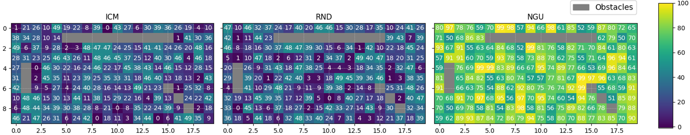
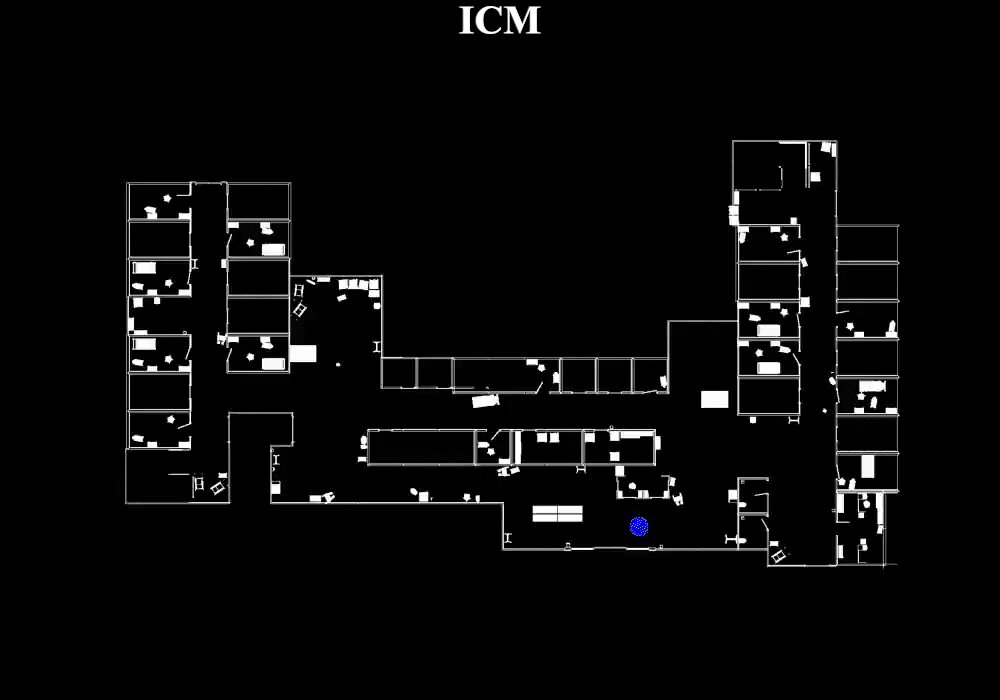
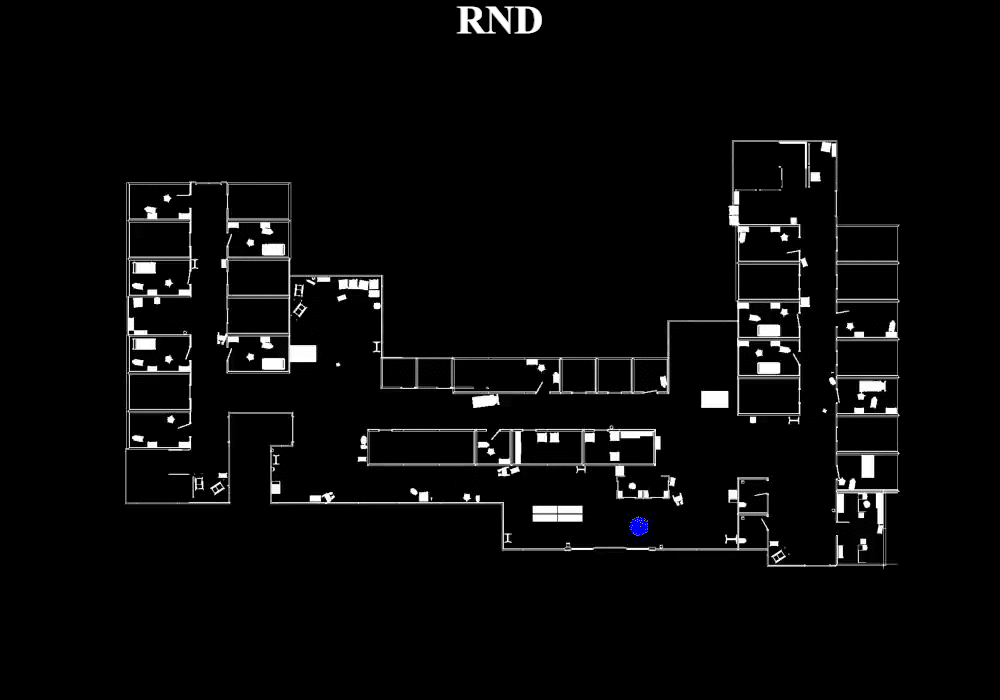
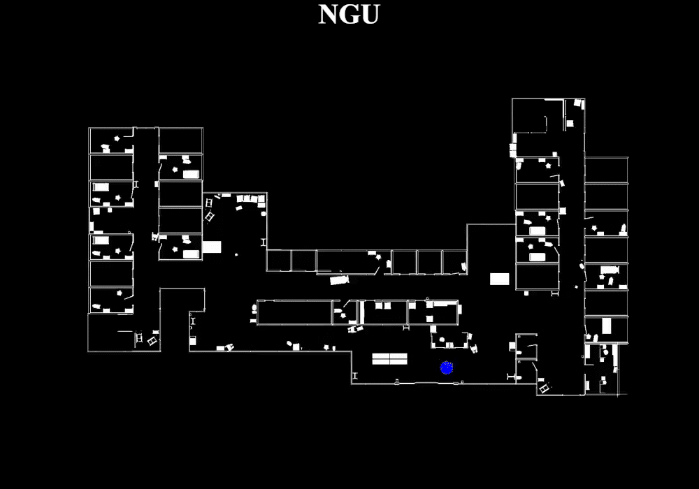

Control & Optimization Laboratory, Hanyang University
In this paper, we propose the Goal Oriented Memory Encoder (GOME) with Never-Give-Up (NGU) model to enhance visual navigation in sparse rewards environments. Our approach addresses the critical need for efficient exploration and exploitation under high-dimensional visual data and limited spatial information. In our proposed GOME-NGU, we first utilize NGU for sufficient exploration. Then GOME is applied to effectively leverage the information acquired during the exploration phase for exploitation. In GOME, the information of goals and their associated rewards, obtained during the exploration phase, are stored as pairs. During the exploitation phase, priorities are assigned to the stored goals based on the agent's current location, arranging them in order of proximity to enable the agent acting optimally. To demonstrate the efficiency of the proposed GOME-NGU, we consider two different experiment categories. Specifically, (i) to validate the sufficiency of exploration using NGU, we measured the environment's state and recorded the number of times the agent visited each state, and (ii) to confirm that GOME optimizes the path to goals nearest to the agent's location during the exploitation phase, we measured the frequency of the agent consecutively reaching nearby goals at least twice. The training for (i) and (ii) was conducted using NVIDIA Isaac Gym, and post-training validation was carried out through migration to Isaac Sim. Additionally, for (ii), the efficiency of the proposed GOME-NGU was validated using the Husky robot in the real-world setting. In the experimental results, our proposed GOME-NGU demonstrated the enhanced performance in both exploration and exploitation aspects in environments with sparse rewards.
Within our goal-oriented network, we input the goal image and generate the goal reward \(r^g_t\). In the GOME, each pair of \((g_t, r^g_t)\) is stored. The value of \(r^g_t\) changes according to the proximity of the goal based on the location of the agent. If the agent takes a specific action (such as reaching a goal) during exploration, all \(r^g_t\) are set to 1.
Through feature extraction, we provide meaningful information from the goal image. We utilize ResNet-50 as the baseline for this process.
Next, we select a priority goal based on the location of the agent. This involves assessing the similarity between the current and goal images in the GOME. If the \(g_n\) is close to the agent, it is selected as the priority goal. The proximity of the goal to the agent corresponds to the similarity score. A high score indicates that the goal is close to the agent. We utilize the cosine similarity to measure this similarity, which is calculated as follows:
$$ \begin{align*} (v_t^O, v_t^G) = \frac{v_t^O \cdot v_t^G}{\|v_t^O\| \times \|v_t^G\|} \end{align*} $$
where \(v^O_t\) is the feature vector of the current image and \(v^G_t\) is the feature vector of the goal image in GOME. The norm of vector, \(v\) is represented as \(\|v\|\).
Once the priority goal is selected, we re-parameterize our goal reward to prioritize the targets near the agent. This re-parameterization scales the similarity score to the goal. The priority goal is selected, and we re-parameterize \(r^g_t\) according to the following formula to facilitate the learning of the agent to visit closer goals first:
$$ \begin{align} r^g_t = \frac{1}{(v^O_t, v^G_t)^\xi}, \end{align} $$
where \(\xi\) is a parameter that adjusts the influence of distance. Using the formula above, goals that are farther from the agent will receive smaller rewards in the given episode.


ICM

RND

NGU

@article{gome-ngu,
author = {Ji Sue Lee and Jun Moon},
title = {{GOME-NGU: visual navigation under sparse reward via Goal-Oriented Memory Encoder with Never Give Up}},
journal = {IEEE Access},
year = {2025},
}